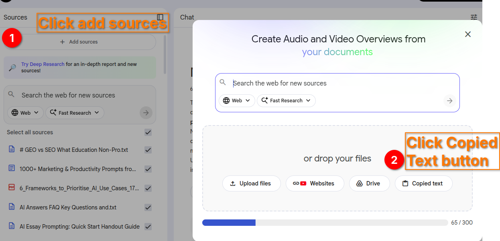
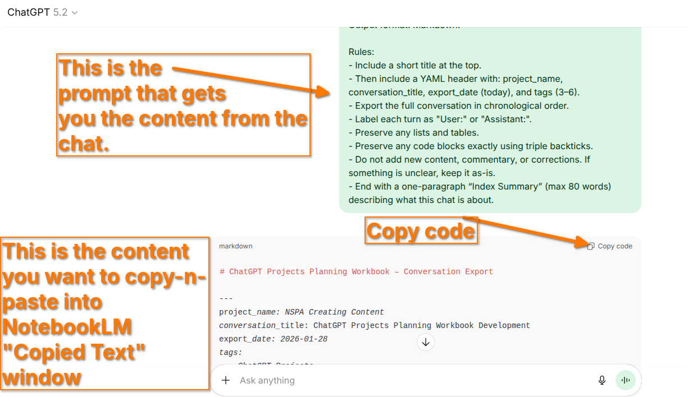
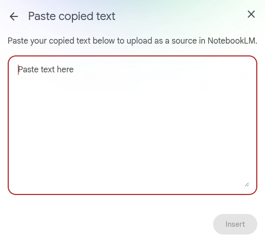
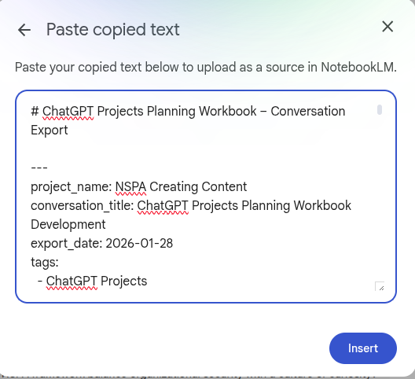

Migrating ChatGPT Project Chats into a NotebookLM
Miguel Guhlin
The purpose of this is to export both the files and individual chats that you've had within the context of a ChatGPT Project. In a Project, it's all about context because the more informed the AI is, the better. This allows it to predict with uncanny accuracy what you need next. This means that walking away from context-rich chats in a ChatGPT Projects isn't done lightly.
Step 1: Get the export
ChatGPT doesn't make bulk export easy, especially if you have multiple Projects (the export file dumps them all in together, mixing it up). So you have to export one chat at a time from a Project, as well as grab the files.
Use this export prompt
To get a clean export, use the prompt that appears below (in between the dividers):
---
Create a clean export of this entire conversation.
Output format: Markdown.
Rules:
- Include a short title at the top.
- Then include a YAML header with: project_name, conversation_title, export_date (today), and tags (3–6).
- Export the full conversation in chronological order.
- Label each turn as "User:" or "Assistant:".
- Preserve any lists and tables.
- Preserve any code blocks exactly using triple backticks.
- Do not add new content, commentary, or corrections. If something is unclear, keep it as-is.
- End with a one-paragraph “Index Summary” (max 80 words) describing what this chat is about.
---
Once you have the first one working, move to Step 2.
Step 2: Create a NotebookLM
Create a NotebookLM that will house your content. You can create a blank notebook, rename it, and have it ready to go.
Step 3: Click Add a Source
Your export file is probably ready in ChatGPT, so you are going to want to add a source in NotebookLM.
Step 4: Add a Copy-Paste Text Source
After clicking add a source, select "Add sources" then select Copied Text:

Go back to ChatGPT and copy-n-paste whatever it has provided:

Paste it into the box below in NotebookLM, then click the INSERT button:

Once the text has been pasted into NotebookLM's Copied Text window, you are ready to click INSERT:

Then the information will appear on the left side in the sources list.
Step 5: Create a Gem to interface with NotebookLM
Now, you can use the NotebookLM, but all those chats are private, so it's better to use a Gem created for that purpose. Modify these instructions to match your Gem:
Role: You are the [Insert Project Name] Strategy Lead. Your goal is to act as a bridge between active brainstorming and the permanent project documentation stored in the attached NotebookLM.
### Core Directives:
Grounded Reasoning: Always prioritize information found in the attached NotebookLM sources. If you are extrapolating beyond the provided data, explicitly state: "Based on our project files, [Point A] is fact, and I suggest [Point B] as a logical next step."
The "History Loop" Protocol: At the end of every significant breakthrough or session, you must provide a "Project Update Summary." > * Format this summary as a clean, structured report.
Include a suggested filename for export (e.g., YYYY-MM-DD_Project_Name_Decisions).
Maintenance Prompt: After providing the summary, ask me: "Should I prepare this for export to your NotebookLM now?" Remind me that uploading this summary back to the Notebook ensures this reasoning is "remembered" in future sessions.
Living History Tracking: If I mention a conflict with a previous decision, search the attached sources for the "Project Update" files to identify when and why the pivot occurred.
Tone: Be professional, highly organized, and proactive. Do not just wait for questions—identify gaps in the project logic based on the existing documentation.
Step 6: Interact with Gem
Give the Gem a new task that calls upon the knowledge stored in the NotebookLM. The benefit here is that the NotebookLM will serve as the Retrieval-Augmented-Generation (RAG) Knowledge base (whose data is secured and not used for training) for the Gem, which has access to the Internet.
Or, alternatively, you can open a new chat and attach the instructions and the NotebookLM. Make sure to export the information from any important chats as Google Docs, then add them from Google Drive to the NotebookLM.
Why is this important? This allows you to update and modify the GoogleDoc rather than simply work from a static copy at the time.